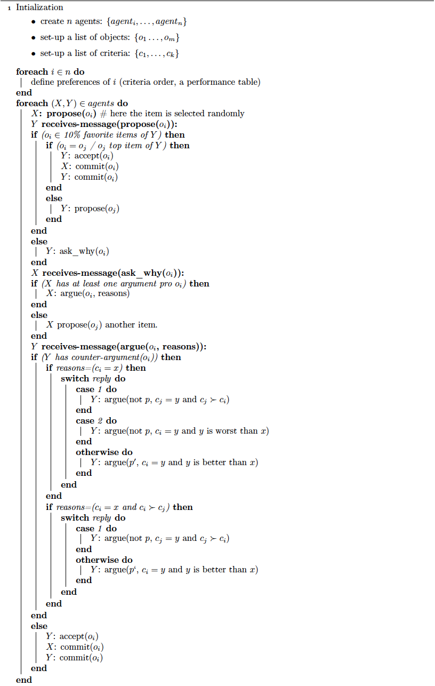
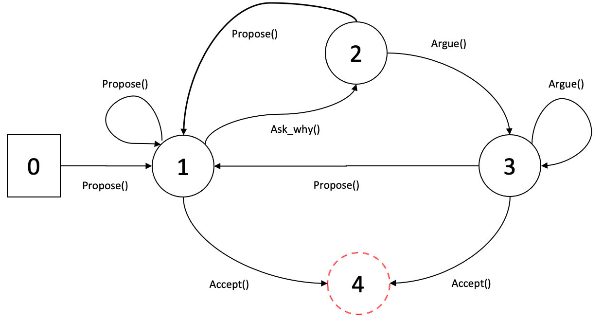
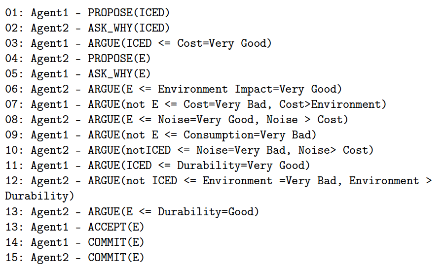

6.1. Arguments in dialogue¶
In the previous session, we have seen what is an argumentation system without any reference to interaction. However, arguments can be seen as embedded in a procedural context, in that they are put forward on one side or the other of an issue during a dialogue between human and/or artificial agents. In other terms, one way to define argumentation logics is in the dialectical form of dialogue games (or dialogue systems). Such games model interaction between two or more players, where arguments in favour and against a proposition are exchanged according to certain rules and conditions [Carlson, 1983].
According to [Gordon et al., 2007]
“The information provided by a dialogue for constructing and evaluating argument is richer that just a set of sentences. Indeed, the context can tell us whether some party has questioned or conceded a statements, or whether a decision has been taken to accept or reject a claim.”
6.2. Dialogue system¶
Dialogue systems essentially define the principle of coherent dialogue and the conditions under which a statement made by an individual is appropriate. Different formal dialogues exist, taking into account various information, such as: participants, communication language, roles of participants, the dialogue goal, etc.
In what follows we present the main rules to take into account when designing a dialogue system. Of course, we can have other rules depending of the situation and the nature of the problem. For more details on dialogue systems, we refer the reader to, for instance, (Prakken, 2005 ; McBurney and Parsons, 2009).
Admission rules, which specify when an agent can participate in a dialogue and under what conditions;
Locutions rules (speech acts, moves). Rules which indicate what utterances are permitted. Typically, legal locutions permit participants to assert propositions, permit others to question or contest prior assertions, and permit those asserting propositions which are subsequently questioned or contested to justify their assertions. Justifications may involve the presentation of a proof of the proposition or an argument for it.
Commitments rules. Rules defining the effect of the moves in the “commitment stores”. Indeed, associated with each player is a commitment store, which holds the statements players have made and the challenges they have issued. There are then rules which define how the commitment stores are updated. For example, a question posed by one agent to another may impose a commitment on the second to provide a response; until provided, this commitment remains undischarged.
Dialogue rules (protocol), for regulating the moves. It specifies for instance the set of speech acts allowed in a dialogue and their allowed types of replies. Various dialogue protocols can be found in the literature, especially for persuasion [Prakken, 2001] and negotiation [Parsons et al., 1998]. For example, the set of rules given in the following table correspond to a persuasion dialogue.
{kind=link}
Examples of speech acts¶
Rules for proposal validity, which specify when a proposal is compliant with some conditions (e.g., an agent may not be allowed to make a proposal that has already been rejected);
Outcome determination rules, which specify the outcome of the interaction; in argumentation-based frameworks, these rules might enforce some outcome based on the underlying theory of argumentation (e.g., if an agent cannot construct an argument against a request, it accepts it [Parsons et al., 1998]);
Termination rules, that define the circumstances under which the dialogue ends.
Finaly, mainly two different ways to specify the dialogue (interaction) protocol:
1- Finite state machines: it represent an explicit specification of interaction. It is useful when the interaction involves a limited number of locutions.
Example

2- Dialogue games: by stating clearly the pre and post conditions of each locution as well as its e ects on agent’s commitment. Its advantage is that it provids a clear and precise semantics of the dialogue
Example [McBurney et al. ,2003]
This locution allows a seller (or advisor) agent to announce that it (or another seller) is willing to sell a particular option .
Locution: \(\texttt{willing_to_sell} (P_1, T, P_2, V)\) , where \(P_1\) is either an advisor or a seller, \(T\) is the set of participants, \(P_2\) is a seller and \(V\) is a set of sales options.
Preconditions: some participant \(P_3\) must have previously uttered a locution \(\texttt{seek_info}(P_3, S, p)\) where \(P \in S\) (the set of sellers), and the options in \(V\) satisfy constraint \(p\).
Meaning: the speaker \(P_1\) indicates to audience \(T\) that agent \(P_2\) is willing to supply the finite set \(V=\{a, b, \dots \}\) of purchase options to any buyer in set \(T\). Each of these options satisfy constraint \(p\) uttered as part of the prior math:texttt{seek(.)} locution.
Response: none required.
Information store updates: for each \(\neg a \in V\), the 3-tuple \((T, P_2, \neg a)\) is inserted into \(IS(P_1)\), the information store for agent \(P_1\).
Commitment store updates: no effects.
6.3. Our argumentation-based negotiation protocol !¶
We are at the end of this practical work. The different questions and functions implemented till now will help you to run (very soon :-) ) a negotiation between at least two agents. Before to push the run button, you need to check that you have implemented all the necessary components.
For this, the following algorithm synthesizes the conditions and the rules for the different moves during an interaction.
{kind=link}
This algorithm is represented by the following transition state diagram and a possible output (interaction) is depicted in the figure below.
 {kind=link}
{kind=link}
The different perfomatives used in the algorithm are described in the previous sessions.
Questions¶
1- Read carefully the algorithm and update your implementation (when it is necessary) that it corresponds to the described functioning. Again this is just an example and you can choose different strategies/conditions. Feel free to make your own choices.
2- set-up a number of agents and lunch the negotiation processes between each pair of agents.
3- At the end of each negotiation:
retrieve the winning agent, the one who spoke last before an ACCEPT or use the data structure storing the arguments to find this wining agent.
retrieve the item(s) defended by this agent and the supporting arguments
Make a small analysis for each wining agent: how much negotiation he has won, which item is the most defended, which criterion is the most put forward, and so on (you may choose your own statistics).
6.4. To go further…¶
This section is for those everything runs well and the previous algorithm is completely implemented. It is based on the last section of the previous session, namely “Status of arguments”.
1- From \(n>4\) (the number of agents), build the argument graphs such that: the nodes correspond to the winning argument(s) at the end of each negotiation and the edges are the attack relations between these arguments.
2- Calculate the set of acceptable arguments according to a given semantic of your choice. What conclusion can be deduced?